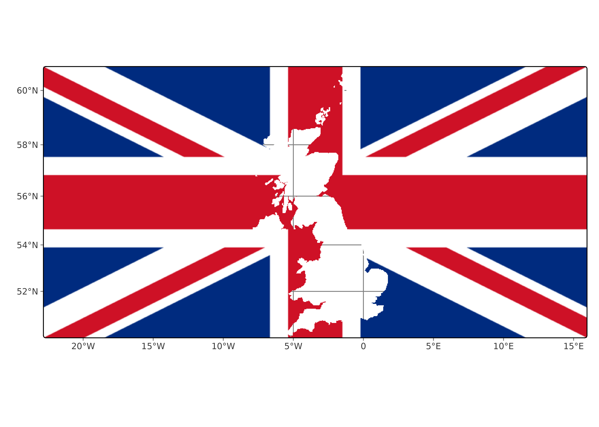

library(rasterpic)
library(terra)
# The flag of the United Kingdom
img <- system.file("img/UK_flag.png",
package = "rasterpic"
)
uk <- sf::st_read(
system.file("gpkg/UK.gpkg",
package = "rasterpic"
),
quiet = TRUE
)
uk_img <- rasterpic_img(uk, img, mask = TRUE, inverse = TRUE)
plotRGB(uk_img)This article shows how to plot the SpatRaster produced by rasterpic_img() with several packages.
Base plots
The most straightforward option is to use the base plot() methods provided by the package terra (terra::plotRGB()):
With ggplot2 + tidyterra
tidyterra provides full support for terra SpatRaster objects:

With tmap
tmap can also be used to create great maps:
library(tmap)
tm_shape(uk_img) +
tm_graticules() +
tm_rgb()

With mapsf
mapsf also provides this functionality:
library(mapsf)
mf_raster(uk_img)
mf_scale()
mf_inset_on(x = "worldmap", pos = "topright")
mf_worldmap(uk)
mf_inset_off()
With maptiles
maptiles is an interesting package that provides the ability to download map tiles from different providers. It also has a specific function for plotting terra SpatRaster objects:
library(maptiles)
other_tile <- get_tiles(uk, crop = TRUE, zoom = 6)
other_tile_crop <- terra::crop(other_tile, uk_img)
plot_tiles(other_tile_crop)
plot_tiles(uk_img, add = TRUE)
References
Tennekes M (2018). “tmap: Thematic Maps in R.” Journal of Statistical Software, 84(6), 1–39. doi:10.18637/jss.v084.i06.
Giraud T (2026). mapsf: Thematic Cartography. doi:10.32614/CRAN.package.mapsf.
Hernangómez D (2023). “Using the tidyverse with terra objects: the tidyterra package.” Journal of Open Source Software, 8(91), 5751. ISSN 2475-9066, doi:10.21105/joss.05751, https://doi.org/10.21105/joss.05751.
Hijmans R (2026). terra: Spatial Data Analysis. R package version 1.8-93, https://rspatial.org/.
Wickham H (2016). ggplot2: Elegant Graphics for Data Analysis. Springer-Verlag New York. ISBN 978-3-319-24277-4, https://ggplot2.tidyverse.org.